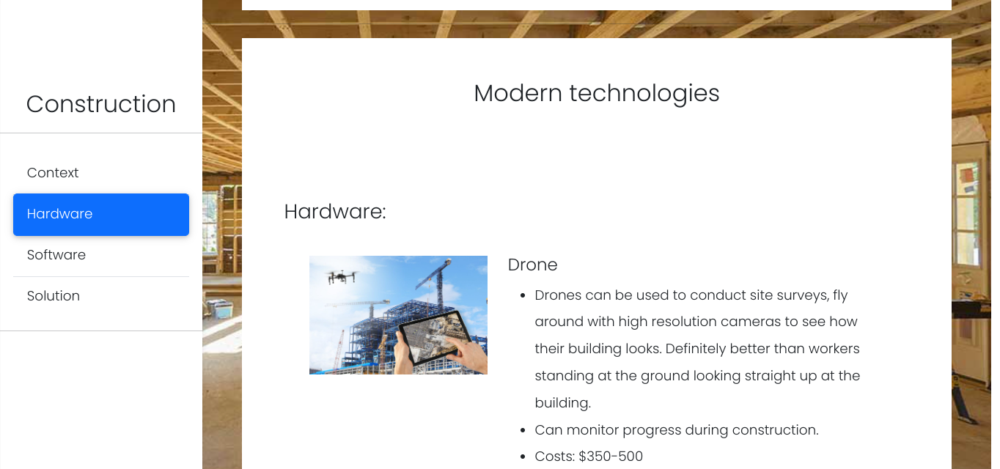

The “Freedom Project” for SEP10 is all about researching the topic that you liked and practicing brainstorming technologies for future needs.
For my project, I am making an informational website that will shows summaries of some technologies that are used in construction using Jekyll and Bootstrap.
One of the challenges I have is that since I never have made a sidebar before, I will have to think how to make it. I found an example on the internet on how to make it, but it doesn’t have the scrollspy effect so I have to add a div element for the entire page for the scrollspy to work.
Result:
One takeaway I have is to have better time management. I have spent too much time trying to figure out how to have two scrollspy because I want to have two different navigation tools. One for small screen sizes and one for bigger screens. But because in order for scrollspy to work, you need each section to have an id and have all the navigation tools to have the id on the hyperlink, this apparently led to scrollspy not working. After a long time playing around with liquid and javascript and still couldn’t figure out why it wouldn’t work, I am falling behind the schedule and I don’t have my presentation and elevator pitch done on time. Although Mr. Mueller told me to finish the presentation and elevator pitch first then come back, I didn’t really listen to it completely and thought that I would be fine.
After finishing this freedom project, I would like to discover more about javascript so next time I have a better knowledge and might less time overcoming the challenge.
Blog